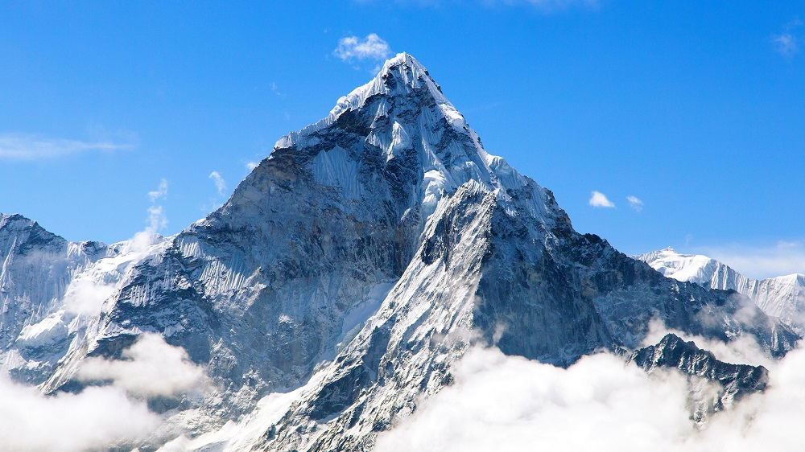

Mount Everest - matka gór
Mount Everest, Czomolungma – najwyższy szczyt Ziemi, ośmiotysięcznik położony w Himalajach Wysokich, na granicy Nepalu i Chińskiej Republiki Ludowej. Po chińskiej stronie objęty ochroną w ramach rezerwatu biosfery pod nazwą Rezerwat Biosfery Czomolungmy. Jest zbudowany z granitów, gnejsów oraz z wapieni i łupków.
